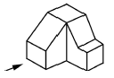
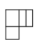
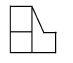
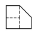
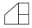

건설기계정비기능사 (2005-10-02 기출문제)
1과목: 건설기계정비(임의구분)
1. 4행정 사이클 1-3-4-2의 폭발순서에서 1번이 흡기 행정시 4번은 무슨 행정을 하는가?
- 흡입
- 압축
- 폭발
- 배기
(정답률: 70%)

2. 유압이 규정 이상으로 높아지는 경우가 아닌 것은?
- 엔진의 회전속도가 높다.
- 윤활회로의 어느 곳이 막혔다.
- 오일의 점도가 지나치게 높다.
- 엔진 오일이 가솔린으로 현저하게 회석 되었다.
(정답률: 75%)
3. 다음 중 디젤기관에서 필요로 하지 않는 부속장치는 어느 것인가?
- 냉각장치
- 연료 공급장치
- 점화장치
- 윤활장치
(정답률: 75%)
4. 전자제어 엔진에 구성되어 있는 센서의 설명으로 틀린 것은?
- 공기유량센서(AFS)는 엔진으로 흡입되는 공기량에 비례하는 신호를 보낸다.
- 크랭크각 센서는 크랭크축의 위치를 판별하여 준다.
- 산소 센서는 냉각시 폐회로 상태로 온간시는 개회로 상태로 작동한다.
- 수온센서(WTS)는 냉각수 온도를 감지하여 신호를 보낸다.
(정답률: 71%)
5. 기관 출력 저하의 원인 중 적합하지 않은 것은?
- 피스톤 링이 과대 마모되었다.
- 밸브 및 인젝션 타이밍이 부적당하다.
- 라이너 또는 피스톤이 나쁘다.
- 에어클리너를 신품으로 교환하여 공기를 과대 흡입한다.
(정답률: 92%)
6. 실린더 헤드 볼트의 조이는 힘을 측정하기 위한 공구는?
- 토크 렌치
- 복스 렌치
- 소켓 렌치
- 오픈 엔드 렌치
(정답률: 84%)
7. 21톤급 굴삭기 엔진에 부착된 RPM센서의 부착 위치는?
- 타이밍 기어
- 크랭크 샤프트 기어
- 플라이휠 링 기어
- 캠 샤프트 기어
(정답률: 57%)
8. 피스톤 간극이 클 경우 생기는 현상으로 맞지 않는 것은?
- 압축압력 상승
- 블로바이 발생
- 피스톤 슬랩 발생
- 엔진 출력 저하
(정답률: 88%)
9. 가장 많이 사용하는 밸브 시트의 각도는?
- 15° 와 30°
- 30° 와 45°
- 45° 와 65°
- 45° 와 75°
(정답률: 56%)
10. 교류 발전기에서 발생된 교류 전류를 직류 전류로 정류하는 것은 어느 것인가?
- 다이오드
- 계자 릴레이
- 슬립 링
- 정류 조정기
(정답률: 67%)
11. 연료분사 펌프에서 연료의 분사량을 조정하는 것은?
- 딜리버리 밸브
- 태핏 간극
- 제어 슬리브
- 노즐
(정답률: 54%)
12. 크랭크축이 회전 중 받는 힘이 아닌 것은?
- 휨(BENDING)
- 전단력(SHEARING)
- 비틀림(TORSION)
- 관통력(PENETRATION)
(정답률: 71%)
13. 노즐의 압력이 떨어지는 것과 관계가 있는 것은?
- 노즐에 카본 부착
- 니들 밸브의 더러워짐
- 노즐 스프링의 절손
- 노즐 구멍의 막힘
(정답률: 41%)
14. 12V 100AH의 축전지 2개를 직렬로 접속하면?
- 12V, 100AH가 된다.
- 12V, 200AH가 된다.
- 24V, 100AH가 된다.
- 24V, 200AH가 된다.
(정답률: 69%)
15. 기동모터의 마그넷 스위치 흡인시험을 하기 위해서는 어느 단자와 어느 단자에 전압을 연결하여야 하는가? (단, B:배터리, St:콘택트 스위치, M:무빙 스터드)
- 단자 St와 몸체
- 단자 St와 단자 M
- 단자 B와 단자 M
- 단자 M과 몸체
(정답률: 50%)
16. 전자제어 에어컨을 통과하여 나오는 공기의 온도를 제어하기 위한 센서가 아닌 것은?
- 엔진 흡기 온도센서
- 건설기계 실내 온도센서
- 건설기계 외부 온도센서
- 증발기 온도센서
(정답률: 48%)
17. 두 줄 나사의 리드가 6mm인 경우 피치는 몇 mm인가?
- 1
- 2
- 3
- 6
(정답률: 59%)
18. 점용접의 3대 요소가 아닌 것은?
- 가압력
- 전압의 세기
- 통전시간
- 전류의 세기
(정답률: 36%)
19. 다음 담금질 조직 중에서 가장 경도가 높은 것은?
- 펄라이트
- 소르바이트
- 마텐자이트
- 트루스타이트
(정답률: 56%)
20. 다음 중 용접을 융접과 압접으로 구분할 때 융접법은?
- 초음파 용접
- 저항 용접
- 아크 용접
- 마찰 용접
(정답률: 60%)
2과목: 일반기계공학(임의구분)
21. 숫돌 바퀴의 3요소에 해당하지 않는 것은?
- 숫돌입자
- 기공
- 결합제
- 결합도
(정답률: 20%)
22. 금속을 소성 가공할 때 열간가공과 냉간가공의 기준은?
- 피니싱 온도
- 용해 온도
- 변태 온도
- 재결정 온도
(정답률: 65%)
23. 그림과 같은 물체를 3각법으로 투상할 때 화살표 방향을 정면도로 한다면 좌측면도에 해당하는 것은?





(정답률: 56%)
24. 축에 테이퍼가 있어도 사용할 수 있어 편리하나 축에 홈을 깊이 파야하므로 축의 강도가 약해지는 결점이 있는 키로 우드러프(woodruff key)라고도 하는 것은?
- 반달 키
- 원뿔 키
- 성크 키
- 접선 키
(정답률: 38%)
25. 강의 표면 경화법으로 적당치 않은 것은?
- 숏 피닝
- 질화법
- 금속 도장법
- 침탄법
(정답률: 42%)
26. 줄 작업이나 기계 가공한 면을 한층 더 정밀하게 다듬질하는 공구이며, 부품끼리 접촉하는 부분의 평면이나 곡면의 다듬질에 사용하는 것은?
- 스크라이버
- 스크레이퍼
- 서피스 게이지
- 사인바
(정답률: 80%)
27. 불꽃심과 겉불꽃 사이에 있는 백색의 불꽃으로 아세틸렌 가스의 양이 많을 때 생기며, 스테인리스강, 니켈강 등의 용접에 이용되는 것은?
- 탄화 불꽃
- 중성 불꽃
- 산화 불꽃
- 수소 불꽃
(정답률: 53%)
28. WA46H8V로 표시된 연삭 숫돌에서 WA가 표시하는 것은?
- 입도
- 결합도
- 숫돌입자
- 결합제
(정답률: 63%)
29. 다음 치수의 보조기호 중 45°의 모따기 기호는?
- ø
- □
- C
- R
(정답률: 69%)
30. 다음 중 가는 실선으로 표시할 수 없는 것은?
- 치수선
- 가상선
- 회전 단면선
- 지시선
(정답률: 46%)
31. 나사산의 각이 60°이고 ABC나사라고도 불리는 결합용 나사는?
- 테이퍼 나사
- 유니파이 나사
- 톱니 나사
- 사다리꼴 나사
(정답률: 70%)
32. 공작물 가공 및 절삭에서 사용하는 절삭제의 특징이 아닌 것은?
- 가공물의 표면 경화를 돕는다.
- 공작물의 냉각을 돕는다.
- 공구와 칩의 친화력을 돕는다.
- 공구의 냉각을 돕는다.
(정답률: 34%)
33. 운반기계를 이용하여 운반 작업을 할 경우 틀린 사항은?
- 무거운 것은 밑에, 가벼운 것은 위에 쌓는다.
- 긴 물건을 쌓을 때는 끝에 위험 표시를 한다.
- 긴 물건이나 높은 화물을 실을 경우 보조자가 편승한다.
- 구르기 쉬운 짐은 로프로 반드시 묶는다.
(정답률: 77%)
34. 옷에 묻은 먼지를 털 때 사용해서는 안되는 것은?
- 털이개
- 손수건
- 솔
- 압축공기
(정답률: 71%)
35. 연삭숫돌 원주면과 받침대의 간격은 몇 mm정도가 양호한가?
- 2~3
- 5~7
- 7~10
- 10~15
(정답률: 62%)
36. 산소용접 작업에 있어서 안전상 옳지 못한 것은?
- 아세틸렌 누출검사는 비눗물로 한다.
- 역화의 위험을 방지하기 위하여 안전기를 사용한다.
- 역화가 일어났을 때는 즉시 아세틸렌 밸브부터 먼저 잠근다.
- 점화는 성냥불로 하지 않는다.
(정답률: 74%)
37. 일반 공구 사용에서 안전한 사용법이 아닌 것은?
- 조정 조우에 잡아당기는 힘이 가해져야 한다.
- 렌치에 파이프 등의 연장대를 끼워서 사용해서는 안된다.
- 언제나 깨끗한 상태로 보관한다.
- 녹이 생긴 볼트나 너트에는 오일을 넣어 스며들게 한 다음 돌린다.
(정답률: 61%)
38. 기동전동기의 분해 조립시 주의할 사항이 아닌 것은?
- 관통볼트 조립시 브러시 선과의 접촉에 주의할 것.
- 레버의 방향과 스프링, 홀더의 순서를 혼동하지 말 것.
- 브러시 배선과 하우징과의 배선을 확실히 연결할 것.
- 마그네틱 스위치의 B단자와 F단자의 구분에 주의할 것.
(정답률: 50%)
39. 차량 정비공장의 안전수칙 중 잘못 표시한 것은?
- 그리스대 및 주유대를 사용치 않을 때 실족하지 않게 보호한다.
- 흡연은 때에 따라 하고 차량에 연료를 넣어서는 안된다.
- 엔진에서 배출되는 일산화탄소에 주의하여 통풍장치를 설치한다.
- 모든 전기장치는 지하선 어스를 묻고 이동식 전기기구는 방호장치를 한다.
(정답률: 75%)
40. 엔진의 각부 조립 작업시 토크렌치를 사용하는 가장 큰 이유는?
- 동일한 힘으로 각부를 서로 안착시키기 위해서
- 볼트의 인장강도를 고려하여 절단되지 않게 하기 위하여
- 토크를 적절하게 함으로써 유막 간극이 맞게 되므로
- 조립작업이 끝난 후 풀리는 현상이 없도록 하기 위하여
(정답률: 65%)
3과목: 안전관리(임의구분)
41. 안전 표식에서 주의 표식은 다음 중 어느 것인가?
- 녹색
- 황색
- 오렌지색
- 흑색
(정답률: 66%)
42. 유압식 브레이크의 마스터 실린더 푸시로드에 작용하는 힘이 200kgf이고 피스톤의 단면적이 4cm2이다. 이때 발생하는 유압은 몇 kgf/cm2인가?
- 20
- 30
- 40
- 50
(정답률: 60%)
43. 지게차 브레이크 드럼을 분해아여 점검하지 않아도 되는 것은?
- 턱 마모 및 균열
- 런 아웃 및 부식
- 접촉면의 긁힘 및 균열
- 접촉면의 손상 및 편마멸
(정답률: 56%)
44. 유체 클러치에서 구동축과 피동축의 속도에 따라 현저하게 달라지는 것은?
- 클러치 효율
- 열 발생
- 와류 증대
- 와류 감소
(정답률: 68%)
45. 유압 잭은 무슨 원리를 이용한 것인가?
- 베르누이의 원리
- 파스칼의 원리
- 상대성 원리
- 아르키메데스의 원리
(정답률: 82%)
46. 다음은 불도저의 토크 변환기에 대하여 설명한 것이다. 맞는 것은 어느 것인가?
- 터빈 축은 구동판을 거쳐 기관의 플라이휠과 연결되어 있다.
- 펌프는 커플링을 거쳐 기관의 플라이휠과 연결되어 있다.
- 펌프는 구동판을 거쳐 기관의 플라이휠과 연결되어 있다.
- 터빈 축은 커플링을 거쳐 기관의 플라이휠과 연결되어 있다.
(정답률: 46%)
47. 유압회로 안에 있어야 할 3종류의 밸브는?
- 유량조절 밸브, 플로우 밸브, 압력제어 밸브
- 압력제어 밸브, 유량조절 밸브, 방향전환 밸브
- 방향 밸브, 디력셔널 밸브, 압력제어 밸브
- 압력조정 밸브, 압력제어 밸브, 유량조정 밸브
(정답률: 68%)
48. 유압펌프의 캐비테이션(cavitation)현상을 방지하기 위하여 주의하여야 할 사항으로 틀린 것은?
- 오일탱크의 오일점도는 적정점도가 유지되도록 한다.
- 흡입구의 양정을 1m 이상으로 한다.
- 펌프의 회전속도는 규정 속도 이상으로 해서는 안된다.
- 흡입관의 굵기는 유압펌프 본체의 연결구 크기와 같은 것을 사용한다.
(정답률: 77%)
49. 트랙 장력을 조정해야 할 이유가 아닌 것은?
- 트랙의 이탈방지
- 스윙모터의 과부하 방지
- 트랙 구성품의 수명 연장
- 스프로킷의 마모방지
(정답률: 72%)
50. 브레이드 폭이 2m, 높이가 0.7m인 블도저의 블레이드 용량은?
- 1.78m3
- 1.58m3
- 1.15m3
- 0.98m3
(정답률: 34%)
51. 다음 중 자동변속기가 과열되는 원인으로 틀린 것은?
- 과부하 운전을 하였다.
- 메인 압력이 높다.
- 오일 쿨러가 막혔다.
- 오일량이 너무 많다.
(정답률: 78%)
52. 굴삭기에서 운전석의 레버를 움직여도 작업장치가 동작하지 않을 때 점검사항 중 틀린 것은?
- 유압 탱크의 오일량을 점검한다.
- 유압 펌프 흡입구로 공기가 유입되는지 점검한다.
- 파일럿 밸브의 압력이 정상인지 확인한다.
- 방향제어 밸브가 작동하는지 확인한다.
(정답률: 60%)
53. 크레인용 와이어 로프 꼬임 중 스트랜드를 왼쪽 방향으로 꼰 것은?
- Z 꼬임
- 랭 꼬임
- S 꼬임
- 보통 꼬임
(정답률: 60%)
54. 유로 내에 공기가 침입할 때 일어나는 현상이 아닌 것은?
- 공동 현상
- 정마찰 현상
- 열화촉진 현상
- 숨돌리기 현상
(정답률: 44%)
55. 유압 실린더의 종류가 아닌 것은?
- 단동형 실린더
- 복동형 실린더
- 차동식 실린더
- 부동식 실린더
(정답률: 50%)
56. 굴삭기의 아이들러 시일 조정이 잘못 되었을 경우 제일 먼저 파손되는 부분은?
- 아이들러 샤프트
- 아이들러 베어링
- 아이들러 요크
- 아이들러 프레임
(정답률: 65%)
57. 유압회로에 사용되는 기본적인 회로가 아닌 것은?
- 개방 회로
- 압력제어 회로
- 속도제어 회로
- 밸브제어 회로
(정답률: 34%)
58. 아스팔트 믹싱 플랜트 구조장치 중 건조된 가열 골재를 입도 별로 구분하는 장치는 어느 것인가?
- 드라이어 드럼
- 진동 스크린
- 콜드 변
- 핫 엘리베이터
(정답률: 57%)
59. 모터그레이더의 동력전달 순서로 옳은 것은?
- 주클러치-변속기-차동장치-구동장치-뒤차륜
- 주클러치-변속기-구동장치-탠덤장치-뒤차륜
- 변속기-주클러치-차동장치-구동장치-뒤차륜
- 변속기-주클러치-구동장치-탠덤장치-뒤자륜
(정답률: 47%)
60. 아티큘레이트 스티어링(articulated steering)형식의 조향장치가 사용되지 않는 건설기계는?
- 덤프트럭
- 스크레이퍼
- 휠로더
- 불도저
(정답률: 30%)